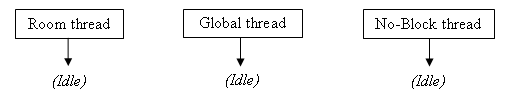
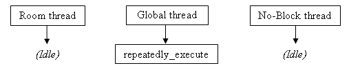
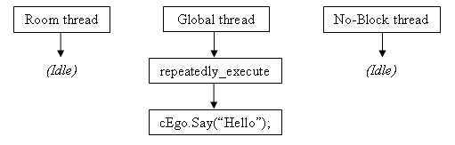
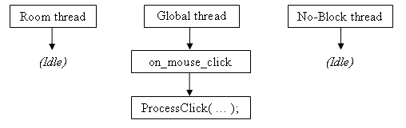
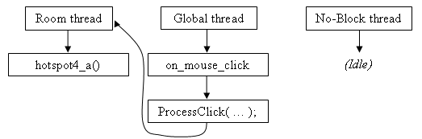
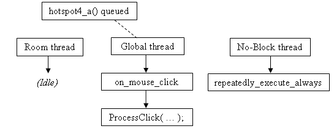

You will see some commands listed as "blocking", where control does not return to the script until the command finishes. But what does this mean, exactly?
In order to better understand this, we need to explore a little about the way that the AGS script engine works. In an AGS game, there are three script threads that can be running at once. Think of a thread as a mini-CPU that executes your scripts.
At the start of the game, the threads are all idle (not running any scripts):

Now, as and when your scripts need to be run, AGS will try to run them on the appropriate thread (the Room thread for local scripts, and the Global thread for global scripts).
So, on the first game loop, your global scripts' repeatedly_execute will be run:

That's fine, and when it finishes running the thread becomes idle again.
But, suppose that within repeatedly_execute, you make a call to the Character.Say command. Say (or DisplaySpeech in old-style scripting) is a blocking command and does not return until the character finishes talking:

The global thread is now blocked, waiting for the character to finish talking. This means that none of your global script functions such as repeatedly_execute, on_event and on_key_press will be run while the character is talking, since the thread is busy.
Now, AGS does queue up to 5 script functions to be run on the thread as soon as it is free; but if you have a lot of things happening within your script, it's possible that you will lose some events such as on_events and keypresses if you script is blocked for a long time.
Let's explore the most common situation in which this causes confusion. Suppose you have a Player looks at inventory event on a Key inventory item, which runs a script to display a message.
Let's also suppose that you have some code at the end of your on_mouse_click function to make the character stand still after running mouse click events.
What you'll find is that the code at the end of on_mouse_click actually gets called before the inventory item's event. Let's look at why:

Remember that AGS does not run events automatically; rather, the on_mouse_click script function handles the mouse click and calls ProcessClick to run the appropriate event. When it does so, it finds that the key's Look At Item event has a script function associated with it.
But oh no! Inventory item scripts are in the global script, and the global thread is already blocked because of the mouse click. Therefore, the inventory event script gets added to the thread's queue, and on_mouse_click then finishes running. The inventory event script will follow on afterwards.
Now you might think that this means that object and hotspot events can run within on_mouse_click, since they use the room thread, like this:

However, this is not the case. It is still the global thread that is calling ProcessClick, so the room script will actually be run on the global thread once it is free.
Finally, we come onto the No-Block thread. This thread is only used to run the repeatedly_execute_always and late_repeatedly_execute_always functions. Because these two are not allowed to run any blocking functions, this ensures that the thread never gets blocked and so it will always run, even when the other threads are busy:

I hope that helps explain blocking in terms of AGS scripting. If there's anything that you don't think is clear, please suggest amendments on the Technical forum.